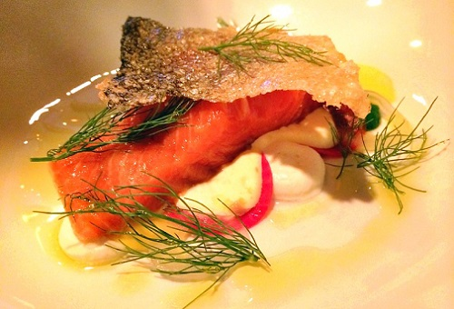
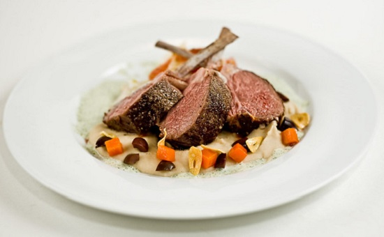
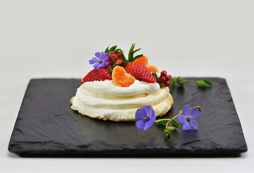

APPETIZERS

REWENA BREAD 10Traditional Māori bread. |
PAUA FRITTER 16Finely diced pieces of paua, served with a side salad and horopito dressing. |
RAW FISH 20Dried snapper fish marinated in coconut cream, served with tomatoes and spring onions. |
POACHED SALMON 22Salmon poached in an orange and pistachio glaze, served with rewena bread. |
SEAFOOD BASKET 25Crumbed mussels, salt and pepper squid, crumbed hoki bites and garlic prawns. |
MAIN

FISH OF THE DAY 25Beer battered fish and kumara fries, served with a side salad and homemade tartare. |
MUSSELS AND SCALLOPS 25Steamed mussel & scallop mousse, honey and soy broth. |
SEAFOOD CHOWDER 30Creamy chowder filled with terakihi, prawn, hoki, scallops and mussels, served with flatbread. |
PORK BELLY 30Slow cooked pork belly served on a bed of apple slaw with roasted kumara, and crispy noodle. |
LAMB STEAK 33New Zealand Lamb coated in a kawakawa crumb, served with Dijon mustard glazed carrots, roasted butternut squash and a mushroom Jus. |
VENISON 33Venison crusted with horopito, served with glazed plums, cabbage salad and red wine Jus. |
DESSERT

KĀPITI ICE CREAM 10Check for daily specials. |
STEAM PUDDING 12Golden syrup flavoured steam pudding, served with vanilla ice cream. |
MINI PAVLOVA 16Mini Pavlova served with kawakawa and lemon infused cream and fresh fruit. |
BANOFFEE PIE 16Toffee, fresh bananas and fresh cream. |
BEVERAGES
RED |
B/G |
|---|---|
| Terrace Edge Pinot Noir, 2012, Wairarapa | 53/13 |
| Altitude Pinot Noir, 2010, Marlborough | 64/15 |
| Greystone Pinot Noir, 2012, Wairarapa | 73/17 |
| Terrace Edge, Syrah, 2012 Wairarapa | 53/13 |
| Altitude Syrah, 2010 Marlborough | 64/15 |
| Greystone Syrah, 2012, Wairarapa | 73/17 |
| Pegasus Bay Merlot, 2013, Waipara | 65/14 |
| Pegasus Bay Pinot Noir, 2013, Waipara | 110 |
WHITE |
|
| Spade Oak Pinot Gris, 2011, Gisborne | 40/10 |
| Maude Pinot Gris, 2017, Otago | 49.50/11 |
| Charles Wiffen Chardonnay, 2013, Otago | 48/11 |
| Amisfield, Riesling, 2016, Otago | 53/12 |
| Lamont Riesling, 2010, Otago | 57/13 |
| Elephant Hill Viognier, 2013, Hawkes Bay | 55/12 |
| Folium Sauvignon Blanc, 2011, Marlborough | 52/11 |
| Billecart-Salmon Brut Reserve, France | 120 |
BEER AND CIDER |
|
| Garage project range | 11 |
| Tuatara range | 11 |
| Panhead range | 10 |
| Coopers Ale | 10 |
| Heineken | 11 |
| Moa Cider | 10 |
| Crooked Cider | 10 |
NON-ALCOHOLIC |
|
| Mineral water | 4.00 |
| Soft drinks | 4.00 |
| Juice | 4.00 |
| Coffee | 4.50 |
| Tea | 3.50 |